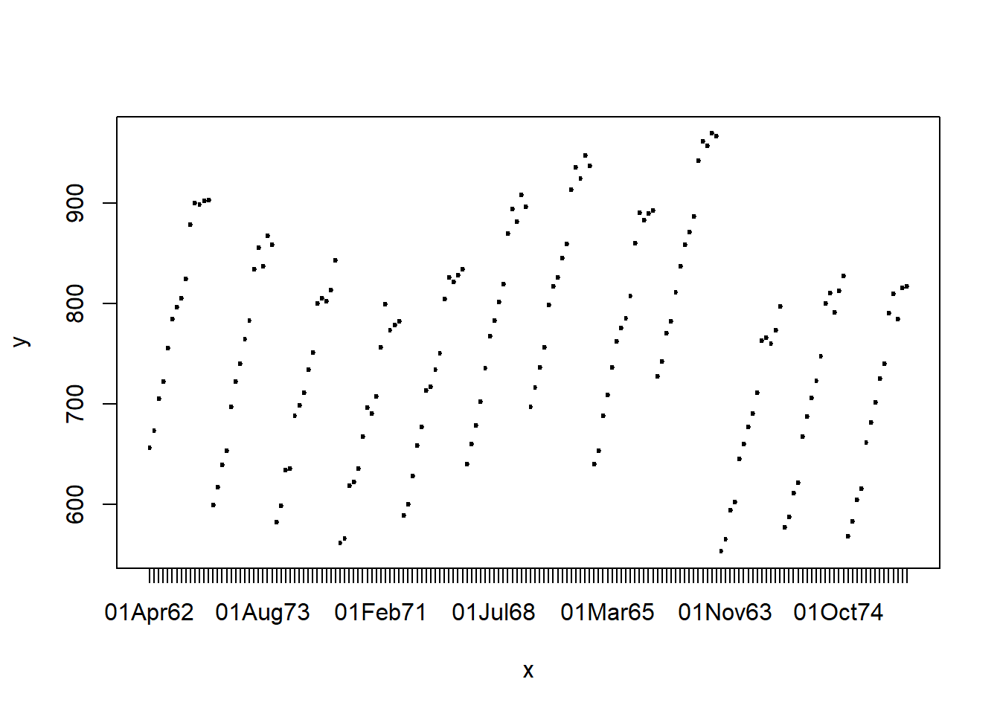
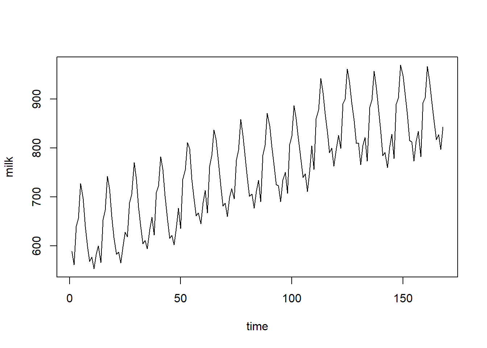
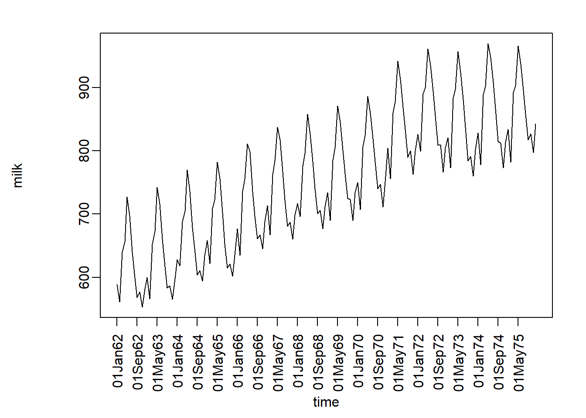

R作时序图
Boylad · 2018-09-30
今天晚上的时间序列分析课上，当我看到演示PPT上的几幅时间序列图像的时候，顿时心血来潮，于是我随手选择了一个名为milk.txt的纯文本文件数据集想着来做时序图。milk.txt数据集是关于1962年1月至1975年12月平均每头奶牛月产奶量的数据。整个数据集一共168行，分类为两列，第一列是time数据，第二列是milk数据。起初，我以为作个这样的时序图只需要两行代码分分钟就能搞定，然而事实并非如此。
X <- read.table("C:/Users/Boylad/Desktop/milk.txt", header = T)
plot(as.factor(X$time), X$milk, type = "o")
str(X)
## 'data.frame': 168 obs. of 2 variables:
## $ time: chr "01Jan62" "01Feb62" "01Mar62" "01Apr62" ...
## $ milk: int 589 561 640 656 727 697 640 599 568 577 ...正如你看到的那样，时序图中的点并没有被线连起来。我调用了一下str命令，看到time列数据类型是Factor，初步猜测问题可能就出在这里。
str(X)
## 'data.frame': 168 obs. of 2 variables:
## $ time: chr "01Jan62" "01Feb62" "01Mar62" "01Apr62" ...
## $ milk: int 589 561 640 656 727 697 640 599 568 577 ...接下来处理问题的思路是，先将数据集X的第一列替换为1到168的整数，然后继续plot一下，如果能做出正确时序图就说明问题就是出在time列的数据类型上。
raw_col_1 <- X[,1] # 提取time列的值，后续使用
X[,1] <- 1:168
plot(X, type = "l") 时序图做出来了，说明问题就出在time列，但是并不是一个完整的时序图，因为上述处理过程的代价是我们改变了横轴的刻度标签。现在我们需要把标签改回来。代码如下：
par(mar = c(6,6,2,2)) #定义图像外边距
plot(X, xaxt = "n", type = "l", mgp=c(4.5,0.5,0))
axis(1, labels = raw_col_1[seq(1,168,8)], at = seq(1,168,8), las = 3)
在这里需要说明的是:
参数mgp=c(1.5,0.5,0)的第一个参数是轴标签相对轴位置的距离，以文本行作为参照单位的；第二个参数表示刻度标记的距离；最后一个参数是轴位置到轴线的距离(常常是0)，正值表示在图形外，负值表示在图形内。
参数xaxt = “n”，表示不显示X轴刻度标签。因为我们要重新定义标签，否则会重叠。
axis()函数中：1表示X轴；因为168个标签过于密集，显示时会重叠，所以我们每隔6个显示一个标签；las=3表示纵向显示标签。
至此，我们的时序图基本上就Okay了。